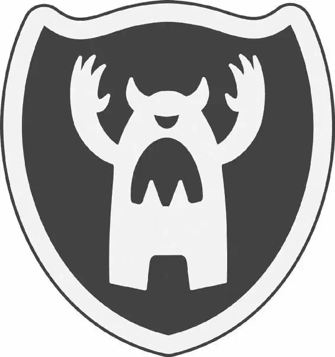

The next day, MU’s stadium was packed with cheering students. The Greek Council president stood onstage and addressed the crowd. “Welcome to the final competition of the Scare Games!” she shouted.
Then the Oozmas came out in their team caps and sweaters. They waved, and the crowd went wild. As the RORs took the stage, the Greek Council president said to the teams, “It’s time to see how terrifying you really are — in the scare simulators!”
She indicated two scare simulators on the f ield, one for each team. Competitors would go head to head. “But be warned,” the president added, “each simulated scare has been set to the highest dif f iculty level!”
“The highest level?” Squishy said nervously.
Mike felt nervous, too. But he took a breath and turned to his team. “Okay, just like we planned. I’ll go first, then Don.”
“Hold on,” Sulley interjected. “Mike’s the one who started all this. And I think it’s only right if he’s the one who finishes it. I think you should go last.”
Mike looked up in surprise. But the others quickly agreed. “Yeah!” said Don.
“Good idea,” Terry added.
“Right on, man!” Art said heartily.
Mike was flattered. “All right,” he told his teammates. “Don? You okay starting f irst?”
“Sure,” Don replied. The Oozmas formed a circle and stacked their hands. Mike placed his on top, and they cheered, “Oooooooozma Kappa!”
Don ran to the Oozma simulator while Reggie, a ROR brother, raced to the RORs’ simulator. They waited for the light that would signal them to start.
“Take it easy on grandpa!” Johnny yelled from the sidelines as the light outside the simulators f lashed from red to green. It was time to GO!
Don carefully opened the door of the simulator and entered the dark room. The crowd watched on the stadium’s Jumbotron as Don stealthily dodged the toys on the f loor.
Meanwhile, Reggie crept into his simulator room and immediately stepped on a rubber ducky. He gasped as the duck squeaked, and the sim-kid sat up in bed. Reggie’s plan was thrown of f, but he quickly recovered and ROARED!
“AHHHHH!” the sim-kid screamed.
At the same time, inside the Oozma simulator, Don’s sim-kid was also sitting up. But Don was clinging to the ceiling above. Suddenly, Don swooped down toward the bed, hanging by one arm as he ROARED! The sim-kid screamed his sim lungs out.
When Reggie and Don exited the simulators, Don’s scream can was fuller than Reggie’s by an inch! Don looked at the RORs and smiled. “Good luck, kids,” he said smugly. Reggie was stunned.
Next, Terri and Terry walked up to the simulator door. Their opponent for the RORs was Chet, who glared at the brothers. But Terri and Terry stayed upbeat. “LET’S DO THIS!” they shouted as the light turned green.
Inside the ROR simulator, Chet snuck up to the bed and let out a fearsome ROARRRRR! Johnny cheered as the scoreboard showed Chet’s scream-can results. It was going to be a hard score to beat.
Inside the Oozma simulator, the sim-kid sat up in bed. The kid spotted what looked like the silhouette of a human dad standing in the room. The sim-kid was about to lie back down when the silhouette suddenly split into a looming two-headed creature. The sim-kid screamed in terror as both heads roared! Their scare came in just below Chet’s!
Next came Squishy. The sim-kid was lying in his bed when his closet door slowly opened. The child looked over at the door, but now it was shut. Then an eerie shadow passed the window. The sim-kid was about to lie back down when it saw Squishy lying in bed beside him. The sim-kid screamed — and Squishy’s scream can f illed more than halfway!
“Wooo!” Ms. Squibbles cheered.
Art entered the simulator room next. He was competing against a four-armed bug monster from the RORs. Art carefully crept to the foot of the sim-kid’s bed. Then he jumped onto the end of the bed and struck a strange yoga pose. He warbled a creepy roar, and his scream can f illed up halfway.
That was a good score, but not great — and the Oozmas were falling further and further behind. The team was disappointed, but they rallied as they realized it was time to bring out their strongest Scarers: Sulley and Mike!
